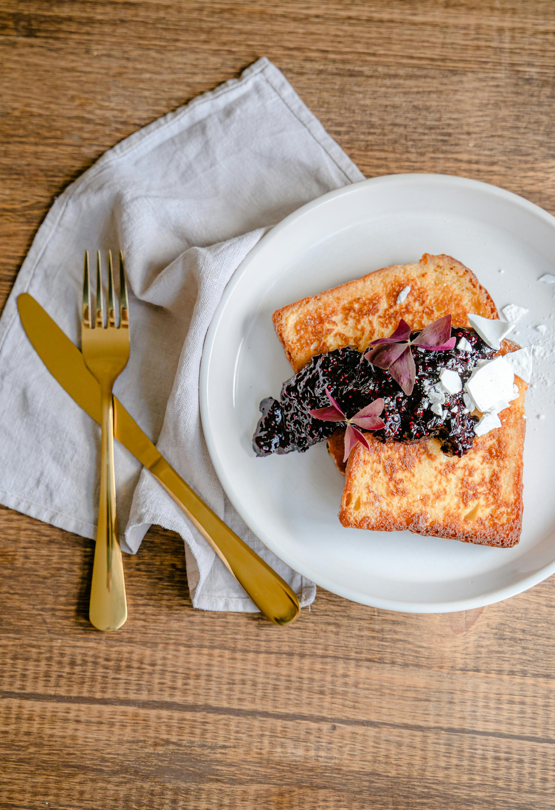

French Toast

Description
Fluffy and scrumptious French Toast. Perfect for a warm wintery morning brunch or breakfast treat!
Ingredients
- 2 large eggs
- 1 cup milk
- Pinch of kosher salt
- 1 tablespoon granulated sugar
- 1 teaspoon vanilla extract
- 1 teaspoon ground cinnamon
- 8 slices sandwich bread
- butter
Steps
- Whisk and dip:
Whisk together eggs, milk, salt, sugar, vanilla extract, and ground cinnamon in a flat-bottomed shallow baking dish. Place bread slices, one or two at a time, into the egg mixture and flip to make sure both sides of bread are well-coated.
- Cook:
Melt butter in a large skillet or on a griddle. Place bread slices in skillet or on griddle and cook on medium heat until golden brown on each side, about 2-3 minutes.
- Serve:Serve immediately or keep warm in oven until ready to serve, but no longer than about 30 minutes.